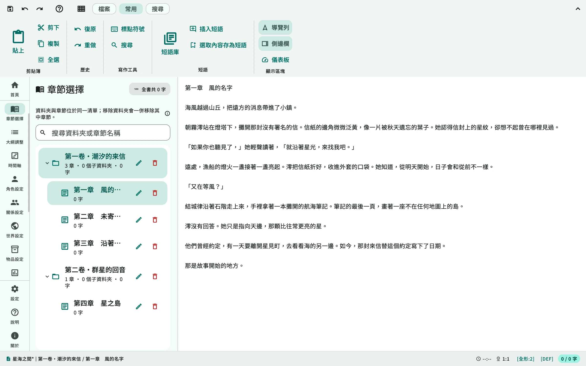
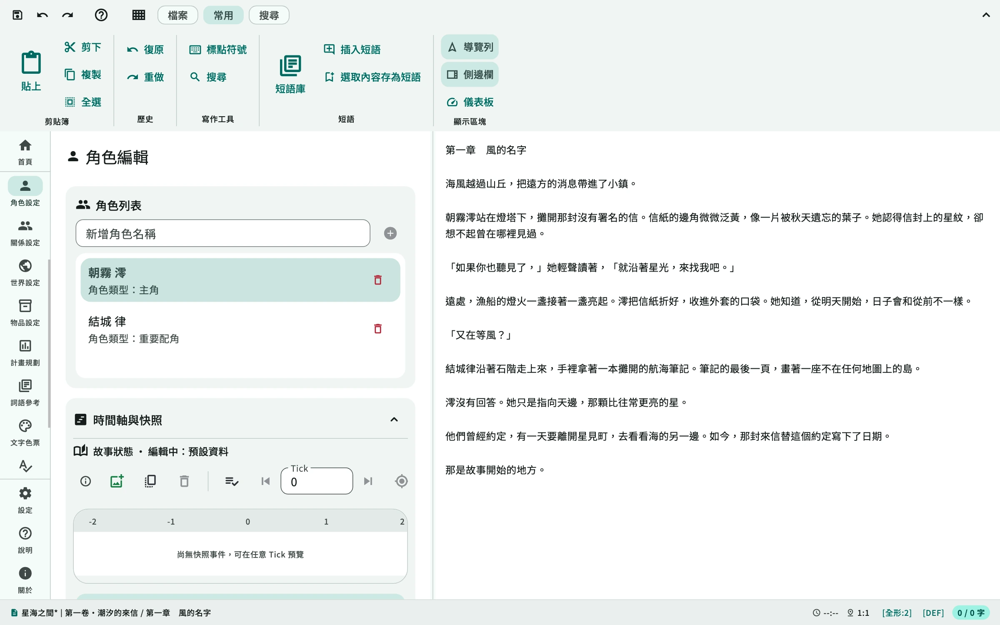
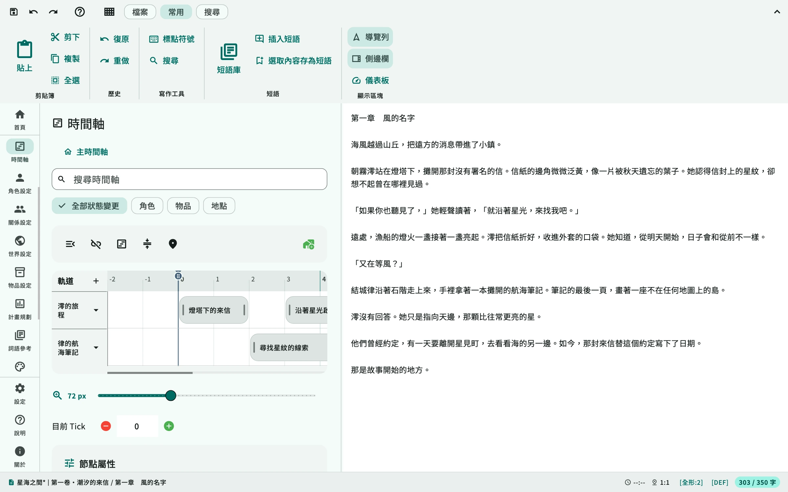
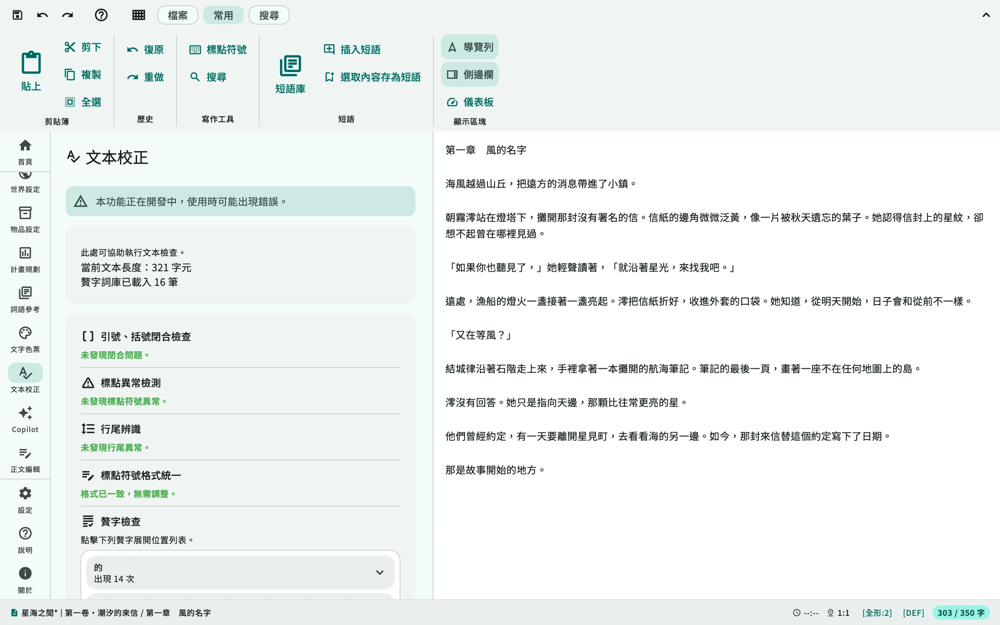

01
建立專案
填寫作品簡介，建立章節與大綱，加入角色、地點等設定資料。
使用 MonoAshi 撰寫正文、編排章節，管理角色、世界設定與時間軸。
從大綱到校稿，在同一專案中完成。
開放原始碼·本機專案保存·以 Flutter 打造

編輯正文、整理設定、檢視事件順序，
再以校稿與修訂工具調整內容。

以主時間軸編排事件與多條故事線，透過 Scene 狀態快照查看特定時點的角色、地點與物品資料。

使用冗字檢查與文本校正檢視稿件，並透過本機 checkpoint 比較支援的內容差異。

整理設定、撰寫正文，
完成校稿與匯出。
填寫作品簡介，建立章節與大綱，加入角色、地點等設定資料。
以章節組織稿件，在正文編輯與設定管理之間切換，使用註記和標記補充說明。
檢查文本與修訂內容，儲存專案後，將選定的正文或設定資料匯出。
以 .mnproj 檔案保存作品，並在設定中調整自動儲存與備份。
原始碼採 Apache 2.0 授權，可查看實作、回報問題或參與開發。
可自備 API Key 使用 Copilot，或授權 MCP 唯讀查看作品。
其他問題與建議
前往 GitHub Issues
MonoAshi 是為故事創作者設計的開源寫作工具，以 Flutter 開發，將正文、章節、大綱、角色、世界觀、物品與時間軸集中在同一個工作區。
作品主要以 .mnproj 專案檔保存在指定的本機位置。自動儲存會寫回已知位置，自動備份則另存於設定的備份資料夾；兩者可在 App 設定中調整。啟用外部 AI 或協作前，請先閱讀相關連線與資料範圍說明。
目前支援正文 TXT／Markdown、設定資料的 Markdown 閱讀稿，以及局部 XML 專案交換。可選單一文件或分散文件 ZIP。完整資料請保留 .mnproj；DOCX／PDF 選項目前停用。
不需要。正文編輯與設定管理可獨立使用。Copilot 使用自備 API Key 連接服務商；Ask／Plan 須在建置時啟用，Plan 只提供提案與驗證，Agent 尚未開放。MCP 則供授權的本機 Host 唯讀查看作品。
專案以 Flutter 開發，包含 Windows、macOS、Linux、Android、iOS 與 Web 的平台工程。各平台能力、驗收與可下載版本有所不同，請以 GitHub Releases 與使用指南為準。
先到 GitHub Releases 查看可下載版本與平台資訊。開發者也可以依儲存庫 README 的步驟從原始碼執行，或透過 Issues 回報問題與提出建議。